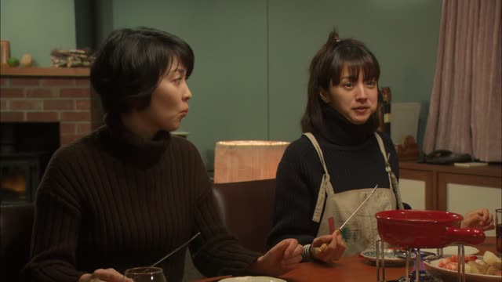
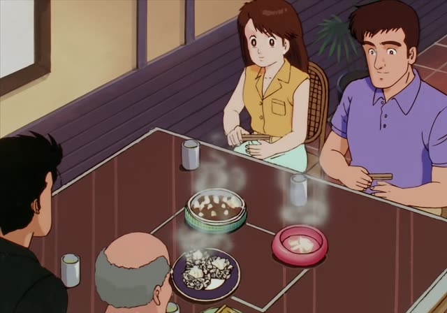

～終わる
Quartet · Episode 3
食べ終わったら、病院行きますね。
"Once I've finished eating, I'll go to the hospital."
～終わる means "finish doing". Take the ます-stem and add 終わる: 食べます → 食べ終わる, 読みます → 読み終わる.
On this card, she hurt her hand but wants to finish her meal first. 食べ終わったら: once I'm done eating. 行きます makes it polite.
It's the opposite of ～始める (start doing).
Kotaro Lives Alone · Episode 10
新聞、読み終わったか？
"Are you done reading the paper?"
On this card, Kotaro asks his neighbor about the newspaper. 読み終わった: finished reading.
Quick Examples
Your friend lends you a manga.
読み終わったら返すね。
"I'll give it back when I'm done reading."
CasualAt the end of a test.
書き終わった人は出てもいいです。
"Those who have finished writing may leave."
PoliteYour roommate is cooking.
洗い終わった？
"Done washing up?"
CasualBorrowing a pen at work.
使い終わったら、戻してください。
"Please put it back when you're done using it."
PoliteWith and without
本を読んだ。
"I read the book." Maybe only part of it.
本を読み終わった。
"I finished reading the book." All of it.
Examples from Media

Quartet · Episode 10
ごはん食べ終わったら、何します？
"What shall we do after we finish eating?"

Oishinbo · Episode 37
食べ終わるまで、目玉焼きは熱くて最高です。
"The fried egg stays hot until you finish eating. Perfect."
On a hot iron plate.
Brush Up Life · Episode 5
あと少し！その小鉢を食べ終われば…
"Almost there! Once she finishes that little dish..."
Narration: she's waiting for the right moment.
Brush Up Life · Episode 2
取りあえず、福ちゃんが歌い終わってから
"For now, after Fuku-chan finishes singing..."
Death Note · Episode 36
書き終わって４０秒で皆死ぬ。
"Forty seconds after I finish writing, they all die."